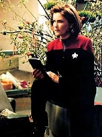
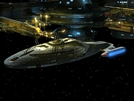
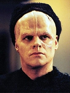
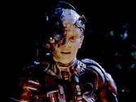
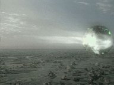
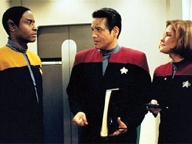
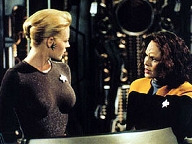
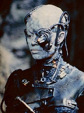

| MANCHETE
DO EPISÓDIO
Seven
enfrenta seu passado Borg
Episódio
anterior | Próximo episódio Sinopse:
Data Estelar: 53049.2  A
Voyager está atracada em um posto avançado Markonian. Como a tripulação
estabeleceu contato cordial com as diversas raças que transitam pela estação,
Janeway abriu as escotilhas da nave para todos que quisessem visitar. Em meio à
multidão, Seven e Naomi vão para o refeitório almoçar. Um homem se aproxima
e coloca sobre a mesa um container, dispondo-se a vender o conteúdo. Quando
Seven percebe que se trata de equipamento Borg, concorda em comprar. De repente,
começa a vivenciar flashbacks de seu passado como zangão Borg.
Acontece que aquele item era um relé da unimatriz
original de Seven of Nine. O homem conversa telepaticamente com dois parceiros e
os instrui a penetrar os sistemas de segurança da Voyager. Enquanto isso, Seven,
bastante intrigada, pede que B'Elanna opine sobre a tecnologia.
Ela conta à tenente sobre as imagens e sensações que vem experimentando. A
engenheira sugere que a ex-Borg esteja sentindo nostalgia do passado. Seven
ignora a análise da colega e deixa o equipamento para o computador analisar.
Quando sobe em sua alcova de regeneração, os intrusos entram na área da carga.
 Um deles injeta tubos de assimilação e
Seven, como sentindo a presença deles, abre os olhos e tenta lutar. Tuvok e
uma equipe de segurança invadem o local e disparam contra os três. Na
Enfermaria, a ex-Borg os identifica como Two of
Nine, Three of Nine, e Four of Nine. Fica claro que todos pertenceram à mesma
unimatriz, mas não se sabe por que queriam acessar as memórias da antiga
"colega". Quando acordam, eles dizem à capitã que estão presos
em uma tríade telepática e desejam tornar-se indivíduos. Oito anos antes,
Seven e eles tinham sido os únicos sobreviventes da queda de uma nave Borg.
Mas, por alguma razão, quando foram reassimilados pela Coletividade, ficaram
os três ligados permanentemente.
Two of Nine, Three of Nine, e Four of Nine
conseguiram escapar dos Borgs
e tiveram seus implantes removidos, porém não conseguem de jeito nenhum
quebrar o link telepático. Eles explicam que foram para a Voyager na esperança de
que Seven se lembrasse do que aconteceu anos atrás, explicasse o fenômeno e
ajudasse a revertê-lo. Ela sugere estabelecer um elo com os três para
encontrar a verdade, mesmo correndo o risco de também ficar presa. A conexão
funciona e descobre-se que Seven tinha sido a responsável pela
reassimilação deles.
 O Doutor consegue quebrar o link entre os
quatro, mas os ex-Borgs sofrem danos cerebrais e entram em coma. O médico
avalia que só restam duas alternativas: ao reanimá-los, ou eles voltam para
a Coletividade, ou têm apenas um mês de vida como indivíduos. Seven, a
princípio, julga que a sobrevivência dos antigos colegas é o que importa.
Mas, depois de conversar com Chakotay, percebe que a melhor decisão é
libertá-los do elo para que possam experimentar mais uma vez a
individualidade. Quando os três acordam, planejam seus curtos futuros
separadamente.
Comentários:
O segredo para apreciar "Survival Instinct"
é esquecer das improbabilidades, incoerências e furos naturais à série. Se
conseguir fazer isso (e é difícil), o telespectador terá aqui uma história bem escrita,
sensível, emocionante e focada em personagens - o que é sempre raro em Voyager.
O roteiro é de Ronald D. Moore, que procurou em A Nova Geração e Deep
Space Nine distanciar-se da "tecnobaboseira" para dar voz
àqueles que realmente importavam: os heróis.
 O episódio já começa com um conceito novo ao
seriado. A Voyager está atracada em uma estação repleta de raças
alienígenas abertas a
novos contatos e interessadas em trocas culturais. Não há xenofobia,
fanatismo, agressão. Pode-se imaginar o que isso significa para os tripulantes.
Nesses quase seis anos de viagem, ficou bastante claro que o Quadrante Delta
não é local para se passar as férias. Ainda assim, pareceu exagerado o
afluxo de visitas na nave. É óbvio que não havia oficiais de segurança em
número suficiente. A atitude de Tuvok ao apresentar os relatórios a Janeway
e Chakotay não foi mais uma amostra de seu mau humor e impaciência,
como alguns diriam. Será que a
capitã precisava mesmo abrir as portas da Voyager daquela forma? Com tanta
gente a bordo, será que nenhuma tecnologia da Frota foi roubada?
Enfim, entre os visitantes destacam-se três ex-Borgs,
interpretados por Vaughn
Armstrong, Berlita Damas e Tim Kelleher. A primeira conveniência: Marika é
Bajoriana. Tudo bem, não chega a ser absurdamente impossível vê-la no
Quadrante Delta, dadas as circunstâncias. É apenas improvável. O que é
difícil mesmo de acreditar é que ela
tenha passado despercebida pela tripulação da Voyager. Como é que ninguém
reparou no detalhe? Inexplicável...
 De
cara, percebe-se que os zangões querem algo com
Seven. Eles desabilitam a segurança (algo corriqueiro e de fácil execução, diga-se de passagem),
invadem a área de carga e tentam acessar as memórias de Seven. Só que ela
reage e é salva por uma equipe de segurança liderada por Tuvok.
Na Enfermaria, os ex-Borgs contam que foram
liberados da Coletividade, mas que misteriosamente permaneceram unidos em uma
tríade telepática.
Vem a segunda dúvida: como puderam os três
planejar e escapar juntos
dos Borgs? Não estavam sujeitos à mente coletiva? A situação torna-se
ainda mais improvável quando o telespectador descobre que, ao se libertarem,
quatro meses antes, eles passaram a procurar Seven. Enquanto zangões,
poderiam muito bem saber que ela estava na Voyager. Os Borgs tiveram acesso à
informação em "Scorpion, Part II"
e "Dark Frontier". O que é
impossível de compreender é que tenham conseguido localizar a nave e chegar
a ela. O Quadrante Delta definitivamente gira em torno dessa tripulação de
150 humanos.
Dúvidas à parte, Seven e o Doutor tentam de
tudo para resolver o mistério. A tripulação responde com toda boa vontade
e, aqui, a nossa ex-zangão mostra o quanto sua humanidade evoluiu.
 O
episódio vai avançando e as cenas se intercalam com flashbacks da
fatídica noite no planeta, onde os quatro
Borgs tiveram o elo com a Coletividade temporariamente cortado. Esse recurso
narrativo funciona muito bem. Aliás, as
seqüências dos flashbacks são
justamente as melhores da história. Aos poucos e lentamente, os quatro
zangões vão se dando conta de quem realmente são: indivíduos que outrora
tiveram suas vidas em seus respectivos planetas, existências essas cortadas
pela assimilação violenta. "Meu Deus, o que eles fizeram
conosco?", revolta-se Marika. "Esta não é a minha mão. Eu quero a
minha mão de volta!", frustra-se Lansor. "Os Borgs mataram os meus
pais. Eu odeio os Borgs", percebe P'Chan. O elenco convidado foi
escolhido a dedo. Cada um se destaca a seu modo e todos atuam maravilhosamente
bem.
Ryan também brilha. Ela consegue
transmitir as emoções mais intensas com um simples olhar. Annika Hansen fora
assimilada ainda criança. Passou por uma câmara de maturação e foi criada
pelos Borgs. Não se lembrava de como era ser humana, nem entendia o conceito
de individualidade. Naquela noite em que teve a conexão separada da mente
coletiva, sentiu um medo extremo. Preferia a reassimilação, seu "porto
seguro". A idéia de morrer sozinha, no escuro, sem o conforto do
"grande todo" causava pânico. Por "instinto de
sobrevivência", usou suas nanossondas para forçar os outros três
zangões a obedecer aos protocolos Borgs.
 Não
vem ao caso discutir como isso provocou o efeito colateral. Mas é uma
grande ironia que a luta de Lansor, P'Chan e Marika para retomar sua
individualidade foi sua sentença de morte.
Compreende-se o que sentiram ao tomar ciência de sua condição, mas se
tivessem controlado as emoções, a revolta, e amparado Annika naquela noite,
é possível que os quatro tivessem escapado. Não houve esse discernimento,
não houve palavras de conforto, o espírito de família. Ninguém pode
condenar Seven pela forma como agiu.
No presente,
quando os quatro ex-zangões se lembram do que aconteceu, ocorre um erro e o link
telepático é desfeito. Só que há um porém: a ruptura causa danos neurais
aos três visitantes e eles entram em coma. Restam apenas duas opções: ou
eles voltam para a Coletividade para serem reassimilados, ou acordarão para
ter apenas um mês de vida. Isso suscita o grande questionamento da semana:
deve lhes ser concedida a chance de viver como indivíduos livres por algumas
semanas, ou a sobrevivência como Borgs fala mais alto?  A
decisão final é encargo de Seven e ela não está disposta a mandá-los à
força para a Coletividade pela segunda vez. Os diálogos com Chakotay e o
Doutor também são dignos de mérito. Realmente, apenas o médico
holográfico pode realmente entender que não se trata só de culpa. A
sobrevivência, neste caso, não é suficiente. Os três são
reanimados e sentem grande paz interior. Mas essa "redenção" de
Seven não implica perdão.
Marika
fecha o segmento com o comentário mais notável nesse sentido: "Eu não
consigo perdoá-la pelo que fez. Mas entendo por que fez". E essa
não-absolvição de Seven é outro ponto forte do roteiro; ele não termina
com respostas fáceis. A estréia de Moore na série com certeza mexeu
com os fãs. Citações:
Seven - "I do not enjoy crowds."
("Eu não gosto de multidões.")
Naomi - "But you were in the Collective. Wasn't that like a big crowd?"
("Mas você estava na Coletividade. Não era como uma grande
multidão?")
Seven - "Which is why I do not enjoy them now."
("É por isso que não gosto de multidões agora.")
B'Elanna - "You may not be nostalgic
about the past, but I'd say you definitely have feelings about it. Strong ones"
("Você pode não se sentir nostálgica pelo passado, mas eu diria
que definitivamente tem sentimentos sobre isso. Sentimentos fortes.")
Two of Nine - "Why do they still
call you Seven? You should have a name."
("Por que eles ainda a chamam de Seven? Você deve ter um nome.")
Seven - "It is my name."
("É o meu nome.")
Four of Nine - "No. It's a designation. You're an individual now."
("Não. É uma designação. Você é um indivíduo agora.")
Seven - "I decided that my former name was no longer appropriate."
("Eu decidi que meu antigo nome não era mais apropriado.")
Four of Nine - "We're not
individuals."
("Não somos indivíduos.")
Three of Nine - "We're not Borg."
("Não somos Borgs.")
Two of Nine - "We're nothing."
("Não somos nada.")
Paris - "Well, Harry and I wanted to
explore the station. Er... we wanted to broaden our understanding of alien
cultures and, er..."
("Bom, Harry e eu queríamos explorar a estação. Er... queríamos
ampliar nossa compreensão das culturas alienígenas e, er...")
Janeway - "Skip the recruiting speech. You were looking for a bar.
Then what?"
("Pulem o discurso de recruta. Vocês estavam procurando um bar. E
então?")
Chakotay - "A month as an
individual or a lifetime as a drone. Which option would you choose?"
("Um mês como indivíduo, ou uma vida inteira como zangão. Que
opção você escolheria?")
Seven - "The damage I did can never be
repaired. And my guilt is irrelevant. I simply want them to experience
individuality. As I have. As you have. At one time, you were confined to this
Sickbay. Your program was limited to emergency medical protocols. In some ways,
you were not unlike a drone. But you were granted the opportunity to explore
your individuality. You were allowed to expand your program. Your mobile
emitter gives you freedom of movement. Your thoughts are your own. If you were
told you had to become a drone again, I believe you would resist."
("O dano que eu causei nunca poderá ser reparado. E minha culpa é
irrelevante. Eu apenas quero que eles experimentem a individualidade. Como eu
experimentei. Como você experimentou. Houve um tempo em que você estava
confinado a esta Enfermaria. Seu programa era limitado a protocolos médicos
de emergência. De certo modo, você não era diferente de um zangão. Mas lhe
foi dada a oportunidade de explorar a sua individualidade. Teve permissão de
expandir seu programa. Seu emissor móvel lhe dá liberdade de movimento. Seus
pensamentos são seus. Se lhe dissessem que teria de voltar a ser zangão,
acredito que você resistiria.")
Doutor - "Yes, I suppose I would."
("Sim, eu suponho que resistiria.")
Seven - "They would resist as well. They would choose freedom, no
matter how fleeting. Only you and I can truly understand that."
("Eles também resistiriam. Eles escolheriam a liberdade, não
importa quão efêmera. Só você e eu podemos entender isso de
verdade.")
Doutor - "Survival is insufficient."
("Sobrevivência é insuficiente.")
Three of Nine - "It's nice to be on a
Federation Starship again. I'd like to stay aboard Voyager."
("É bom estar numa nave da Federação de novo. Eu gostaria de ficar a
bordo da Voyager.")
Seven - "The Captain said you may stay as long as you wish."
("A capitã disse que pode ficar o quanto desejar.")
Three of Nine - "You mean as long as I have. I can't forgive you for
what you did to us. But I do understand why you did it."
("Quer dizer o quanto eu tiver. Não consigo perdoá-la pelo que fez
conosco. Mas eu entendo, sim, por que você fez aquilo.")
Trivia:
 Diz-se o tempo todo na série que Seven foi a única zangão libertada da
Coletividade. Mas, além de Picard, de Hugh ("I, Borg", de A
Nova Geração) e dos ex-Borgs de "Unity", vê-se aqui
três outros que claramente deixaram a colméia há anos.
Diz-se o tempo todo na série que Seven foi a única zangão libertada da
Coletividade. Mas, além de Picard, de Hugh ("I, Borg", de A
Nova Geração) e dos ex-Borgs de "Unity", vê-se aqui
três outros que claramente deixaram a colméia há anos.
Esse é o primeiro trabalho de Ronald D. Moore para a série. Ele fora fã da Série
Clássica e, ao apresentar o roteiro de "The Bonding" para
Michael Piller, subiu a bordo de A Nova Geração. Nesse seriado,
consagrou-se com histórias famosas, como "Relics", "Tapestry"
e "Sins of the Father". Também participou do finale "All
Godd Things" e dos longas Generation e First Contact.
Depois disso, mudou-se para Deep Space Nine, na qual assumiu o cargo de
co-produtor executivo.
Disse Moore, em entrevista a Anna L. Kaplan (2000): "Meu episódio é um
episódio da Seven of Nine. Eu quis fazer porque ela era o personagem mais Voyager-esco.
Eu quis entrar com os dois pés. Não queria fazer um segmento Klingon logo de
cara. Queria brincar com ela. Tenho grande respeito por Jeri Ryan como atriz.
Acho que faz um trabalho notável. Há muito acontecendo naqueles olhos. Ela
consegue passar muita coisa apenas com um olhar. Dito isso, aquele figurino tem
de ir! Simplesmente não sei como explicar. Como você pode levá-la a sério
com aquela roupa? (...) O resto da Voyager não é daquele jeito. Ninguém anda
com um figurino daquele pela nave. Você não desce o corredor e vê mulheres
desfilando de biquíni a caminho do holodeck, e olha que você terá festas na
praia lá". Na época, o roteirista também teceu duras críticas ao
excesso de "tecnobaboseira" na série: "As páginas iam passando
e ao ler o roteiro eu tentava encontrar alguma substância. Eu simplesmente
caía em ouvidos surdos. Para ser honesto, não sentei para assistir a "Survival
Instict" ou "Barge of the Dead". Eu os tenho e dei uma
olhada no roteiro de "Survival Instinct", e eu sabia que eles
tinham feito tomadas extras depois das filmagens. O episódio ficou um pouco
curto, então eles acrescentaram algumas páginas, o que não é incomum. Mas
eles acrescentaram as páginas com toda essa "tecno-droga" na
Enfermaria! Eu odeio muito isso. É tão desconcertante. Não acrescenta nada ao
drama".
Vaughn Armstrong é um dos atores convidados mais recorrentes em Jornada.
Foi o comandante Korris, em "Heart of Glory" e "Shades
of Gray", de A Nova Geração. Em Deep Space Nine, fez
Gul Danar em "Past Prologue" e Seskal em "When it Rains"
e "The Dogs of War". Também teve outras participações em Voyager.
Foi o Romulano Telek R'Mor, de "Eye of the Needle", um capitão
Vidiian em "Fury", o Alfa Hirogen de "Flesh and Blood,
Part I" e o Klingon Korath, do finale "Endgame". Em
1998, já havia gravado uma participação como Korath para a atração "The
Klingon Encounter", do parque temático "Star Trek - The Experience".
Em Enterprise, fez diversas aparições como o almirante Maxwell Forrest.
Além disso, envolveu-se em projetos paralelos ligados à franquia. Cedeu a voz
para os jogos "Star Trek -Armada II", "Star Trek - Bridge
Commander", "Starfleet Command III" e "Star Trek - Elite
Force II". Em 2004, fez uma ponta no documentário "Trekkies II".
Bertila Damas foi Sakonna, em "The Maquis, Parts I & II",
de Deep Space Nine.
Tim Kelleher fez o tenente Gaines, no finale "All Good Things",
de A Nova Geração. Em Enterprise, foi o tenente Pell, de "The
Communicator".
Ficha
técnica:
Direção de Terry Windel
Escrito por Ronald D. Moore
Exibido em 29/09/1999
Produção: 122 Elenco: Kate
Mulgrew como Kathryn Janeway
Robert Beltran como
Chakotay
Roxann Biggs-Dawson como B'Elanna Torres
Robert
Duncan McNeill como Tom Paris
Ethan Phillips como
Neelix
Robert Picardo como Doutor
Tim Russ
como Tuvok
Jeri Ryan como Seven of Nine
Garrett Wang como Harry Kim Elenco
convidado:
Scarlett Pomers como Naomi Wildman
Vaughn Armstrong como Two
of Nine
Bertila Damas como Three
of Nine
Tim Kelleher como Four
of Nine
Jonathan Breck como zangão
Borg
Episódio
anterior | Próximo episódio
|